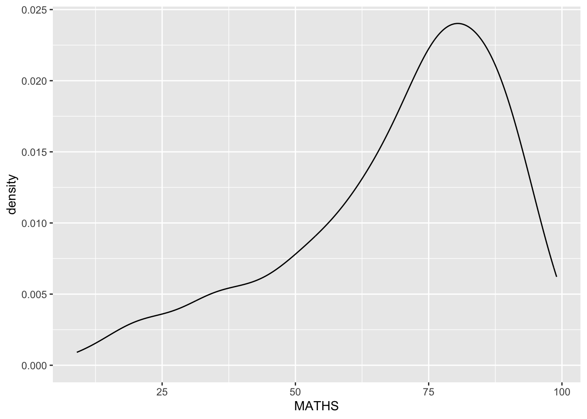
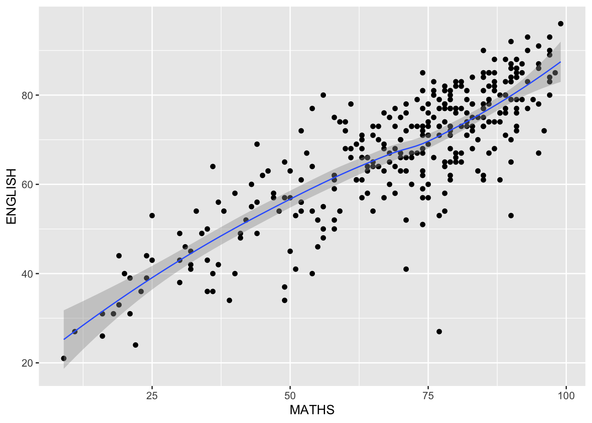

pacman::p_load(tidyverse)Hands-on Exercise 01: Layered Grammer of Graphics
Getting started
Loading tidyverse onto r environment by using the code chunk below
Importing Data
Code chunk below uses read_csv() of readr to import Exam_data.csv into r environment as a tibble data.frame.
exam_data <- read_csv("chap01/data/Exam_data.csv")Plotting a Histogram
First, let us compare the differences between R Graphics, the core graphical functions of Base R and ggplot in plotting a simple histogram.
hist(exam_data$MATHS)
ggplot(data=exam_data, aes(x = MATHS)) +
geom_histogram(bins=10,
boundary = 100,
color="black",
fill="grey") +
ggtitle("Distribution of Maths scores")
Grammar of Graphics
Essential Grammatical Elements in ggplot2: Data
Blank Canvas
ggplot(data=exam_data)
Including the x-axis and the axis’s label
ggplot(data=exam_data,
aes(x= MATHS))
Essential Grammatical Elements in ggplot2: geom
Plotting a bar chart
ggplot(data=exam_data,
aes(x=RACE)) +
geom_bar()
Plotting a dot plot
ggplot(data=exam_data,
aes(x = MATHS)) +
geom_dotplot(dotsize = 0.5)
Improve the visual by removing the y-axis and changing the binwidth
ggplot(data=exam_data,
aes(x = MATHS)) +
geom_dotplot(binwidth=2.5,
dotsize = 0.5) +
scale_y_continuous(NULL,
breaks = NULL) 
Plotting a histogram
ggplot(data=exam_data,
aes(x = MATHS)) +
geom_histogram() 
Modifying the histogram
ggplot(data=exam_data,
aes(x= MATHS)) +
geom_histogram(bins=20,
color="black",
fill="light blue") 
Providing additional info by sub grouping the visual
ggplot(data=exam_data,
aes(x= MATHS,
fill = GENDER)) +
geom_histogram(bins=20,
color="grey30")
Plotting a kernel density estimate plot
ggplot(data=exam_data,
aes(x = MATHS)) +
geom_density() 
Providing additional info by sub grouping the visual
ggplot(data=exam_data,
aes(x = MATHS,
colour = GENDER)) +
geom_density()
Plotting a box plot
ggplot(data=exam_data,
aes(y = MATHS,
x= GENDER)) +
geom_boxplot()
Improving the visual by converting the boxplot into a notched plot
ggplot(data=exam_data,
aes(y = MATHS,
x= GENDER)) +
geom_boxplot(notch=TRUE)
Plotting a violin plot
ggplot(data=exam_data,
aes(y = MATHS,
x= GENDER)) +
geom_violin()Plotting a scatter plot
ggplot(data=exam_data,
aes(x= MATHS,
y=ENGLISH)) +
geom_point() 
Combining different types of plots
ggplot(data=exam_data,
aes(y = MATHS,
x= GENDER)) +
geom_boxplot() +
geom_point(position="jitter",
size = 0.5) Essential Grammatical Elements in ggplot2: stat
Basic box plot
Without means
ggplot(data=exam_data,
aes(y = MATHS, x= GENDER)) +
geom_boxplot()
With means (Method 1)
ggplot(data=exam_data,
aes(y = MATHS, x= GENDER)) +
geom_boxplot() +
stat_summary(geom = "point",
fun = "mean",
colour ="red",
size=4) 
With means (Method 2)
ggplot(data=exam_data,
aes(y = MATHS, x= GENDER)) +
geom_boxplot() +
geom_point(stat="summary",
fun="mean",
colour="red",
size=4) 
Adding a best fit curve on a scatterplot
ggplot(data=exam_data,
aes(x= MATHS, y=ENGLISH)) +
geom_point() +
geom_smooth(linewidth=0.5)
Utilizing of another smoothing method
ggplot(data=exam_data,
aes(x= MATHS,
y=ENGLISH)) +
geom_point() +
geom_smooth(method=lm,
linewidth=0.5)
Essential Grammatical Elements in ggplot2: Facets
Facetting generates small multiples or otherwise called a trellis plot
Facet_wrap()
ggplot(data=exam_data,
aes(x= MATHS)) +
geom_histogram(bins=20) +
facet_wrap(~ CLASS)
Facet_grid()
ggplot(data=exam_data,
aes(x= MATHS)) +
geom_histogram(bins=20) +
facet_grid(~ CLASS)
Essential Grammatical Elements in ggplot2: Coordinates
Default bar chart
ggplot(data=exam_data,
aes(x=RACE)) +
geom_bar()
With coord_flip()
ggplot(data=exam_data,
aes(x=RACE)) +
geom_bar() +
coord_flip()
Default scatterplot
ggplot(data=exam_data,
aes(x= MATHS, y=ENGLISH)) +
geom_point() +
geom_smooth(method=lm, size=0.5)
With the y-axis and x-axis being fixed from 0-100
ggplot(data=exam_data,
aes(x= MATHS, y=ENGLISH)) +
geom_point() +
geom_smooth(method=lm,
size=0.5) +
coord_cartesian(xlim=c(0,100),
ylim=c(0,100))
Essential Grammatical Elements in ggplot2: themes
Gray Theme
ggplot(data=exam_data,
aes(x=RACE)) +
geom_bar() +
coord_flip() +
theme_gray()
Classic Theme
ggplot(data=exam_data,
aes(x=RACE)) +
geom_bar() +
coord_flip() +
theme_classic()
Minimal Theme
ggplot(data=exam_data,
aes(x=RACE)) +
geom_bar() +
coord_flip() +
theme_minimal()
References
- Prof Kam Tin Seong (2025) https://r4va.netlify.app/chap01. Online version